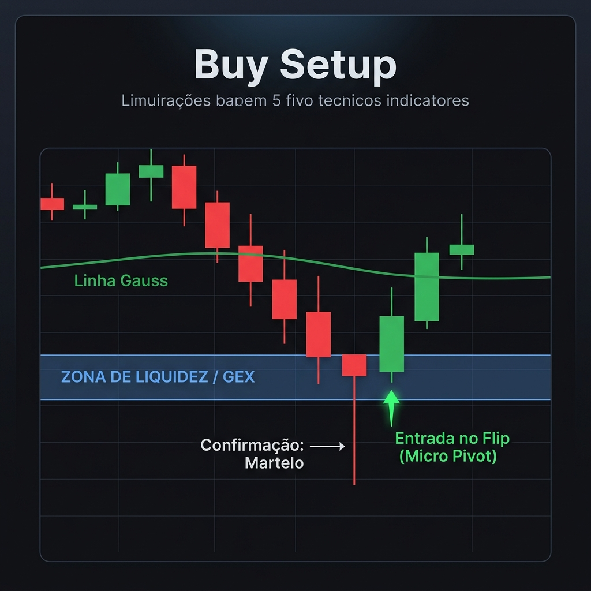
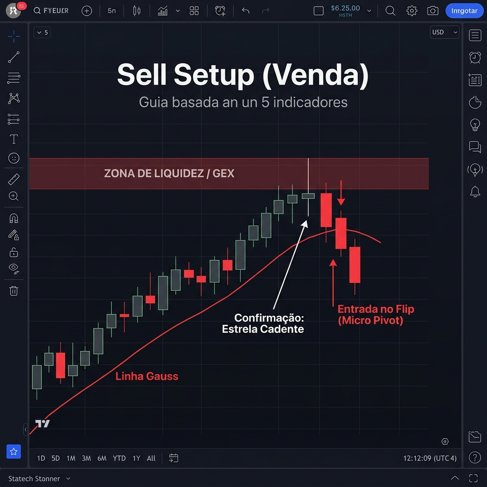

Manual de Operação IRAI
Manual oficial de execução técnica do sistema IRAI. Este playbook define as regras estritas para a validação de tendências, identificação de zonas de liquidez, gatilhos de exaustão, confirmação de fluxo e a mecânica exata de execução no Flip.
O contexto é o primeiro filtro de validação. Ele define se estamos autorizados a buscar operações e qual deve ser o viés direcional dominante do dia. É estruturado pela junção do Rastro Macro e da Linha Gauss.
Determina o viés de maior prazo do ativo. Mostra a direção acumulada das posições das instituições e o apetite a risco no intraday (Compra ou Venda).
Determina a tendência imediata do gráfico. Sua cor define o viés de curtíssimo prazo: Verde para tendência de alta, Vermelha para tendência de baixa.
O ideal é que ambos estejam alinhados na mesma direção para abrir posições. Caso contrário:
- Desalinhamento: Rastro Macro divergente da Linha Gauss. A regra principal é não operar.
- Exceção de Exaustão: Só é permitida a operação se o preço atingir uma zona de interesse relevante e mostrar Exaustão Extrema nas Bandas Gauss.
As zonas delimitam os pontos no gráfico onde os grandes players estão posicionados ou onde há alto volume de ordens pendentes. Não operamos em "meio de caminho"; o preço deve atuar dentro dessas regiões.
Pontos de Interesse Mapeados:
- Gamma Exposure (GEX): Faixas onde o market maker precisa ajustar hedges.
- Ajuste Diário (Daily Settlement): O preço médio de fechamento institucional.
- Máxima do Dia Anterior: Região clássica de stop dos vendidos e breakout.
- Mínima do Dia Anterior: Região clássica de stop dos comprados e suporte.
- Marcações de Liquidez: Blocos de ordens e footprints no gráfico de fluxo.
Todas as zonas têm **peso operacional idêntico**. A validação ocorre quando o preço testa a região e demonstra respeito (rejeição de preço e absorção de fluxo), deixando marcas evidentes (ex: sombras/pavios nos candles).
O sinal serve para nos alertar que o movimento atual está se esgotando no curtíssimo prazo. É o gatilho estatístico que prepara o operador para a reversão rápida.
O preço atinge ou perfura a banda externa do indicador Gauss, indicando um desvio estatístico extremo que tende a retornar à média.
Distorção extrema de spread entre os pares (ex: WIN vs WDO) maior que 1.5 ou 2.0 desvios padrões, chamando arbitragem.
O preço realiza um pullback saudável de retorno à linha Gauss central após um forte impulso direcional.
A confirmação é o gatilho visual no gráfico de velas que prova a entrada de defesa e rejeição. Não operamos apenas porque o preço tocou a zona ou ativou a exaustão; precisamos ver os players reagirem ativamente.
Formação de candle único com corpo pequeno na extremidade oposta e pavio longo (de pelo menos 2x o tamanho do corpo), comprovando absorção de ordens.
Padrão de múltiplos candles cuja soma visual (fusão de tempos gráficos menores) desenha a figura do martelo de rejeição na zona.
A entrada é o momento de máxima precisão. Para evitar violinadas e falsos rompimentos, nós aguardamos o comportamento do candle posterior ao de confirmação para efetivar a nossa ordem.
O Flip é um micro pivot constituído em 3 fases dinâmicas dentro do candle de entrada:
- Fase 1: Abertura e Teste - O candle abre e move-se inicialmente contra a direção da operação (testando a zona/pavio de confirmação).
- Fase 2: Reversão - O fluxo entra na direção correta e empurra o preço de volta para a abertura.
- Fase 3: O Gatilho - O preço rompe o preço de abertura original do próprio candle (o candle muda de cor/flipa). A execução da ordem é imediata neste exato ponto.
Veja a mecânica do Flip acontecer em tempo real. Pressione o botão para rodar a animação do candle de entrada (Compra) e perceba onde a execução é disparada.
O controle de risco operacional do sistema IRAI é parametrizado com base na volatilidade projetada pelo modelo **GARCH** para o dia de hoje. Isso adapta o tamanho do stop de cada operação à volatilidade real do mercado.
Definido entre 20% e 25% do desvio padrão diário do GARCH (`h+1`). Em dias muito voláteis, seu stop se alarga para evitar violinadas; em dias calmos, o stop fica curto para otimizar o ganho.
Definido em 100% do GARCH. Isso garante ao operador exatamente 4 tentativas de 25% ou 5 tentativas de 20% no dia. Atingir 100% encerra o pregão.
🧮 Calculadora de Risco GARCH
1. Operação de Compra (Buy Setup)
O preço vem de um movimento de baixa e encontra a zona de liquidez/GEX de suporte. Um martelo de confirmação se consolida. O candle seguinte abre testando para baixo (fica vermelho) e depois realiza o flip rompendo sua abertura, acionando a compra.

2. Operação de Venda (Sell Setup)
O preço atinge a zona de resistência macro ou GEX. A exaustão é sinalizada pela banda superior de Gauss. Um candle de confirmação de fluxo (Estrela Cadente) fecha. O candle seguinte abre testando para cima (fica verde) e flipa para baixo rompendo a abertura, acionando a venda.

Utilize este checklist dinâmico antes de clicar no botão para garantir que todos os parâmetros operacionais do sistema IRAI foram atendidos. O estado é salvo localmente.